앱 깔고 폴더째 맡기기
이 영상은 Claude 데스크톱 앱의 코드 탭, 즉 Claude Code를 코딩 경험 없는 직장인이 쓰는 법을 일곱 단계로 나눠 설명해요. 팁은 모두 40개예요. 발표자의 약속은 '7단계까지 오면 출근 전에 보고서가 먼저 와 있다'예요. 엑셀 세 개를 던져 놓고 1분 25초 만에 보고서를 받았다고 해요.
첫 화면의 계단이 영상 전체의 지도예요. 왼쪽부터 기본기, 플랜 모드·되돌리기, CLAUDE.md·스킬, 커넥터·API, 에이전트·훅, 앱 만들어 올리기, 원격 조종·예약 자동화 순으로 올라가요.
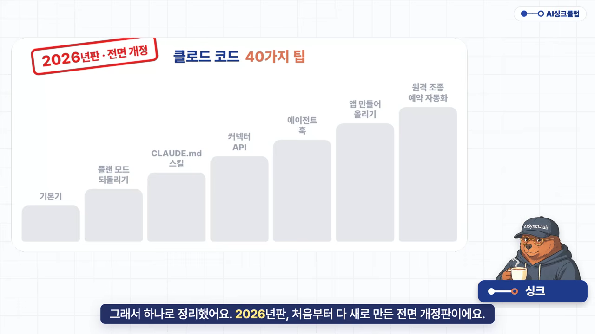
어디서부터 볼지도 정리해 줘요. 처음이면 1단계, 파일은 받는데 엉뚱하게 나오면 2단계, 같은 설명을 매번 치고 있으면 3단계, 다른 앱까지 잇고 싶으면 4단계예요. 초보가 가장 많이 막히는 곳은 요금과 설치라고 해요. 발표자가 해외 초보 강의 14편의 댓글 1,369개를 모아 본 결과예요.
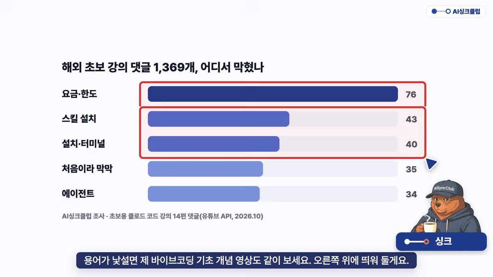
팁 1. 터미널 없이 앱에서 시작해요
예전엔 까만 터미널 창에 명령어를 쳐서 Claude Code를 따로 깔아야 했어요. 이제는 Claude 데스크톱 앱 안에 들어 있어요. 앱을 깔고 로그인한 뒤, 왼쪽 위에서 채팅과 코드를 바꿔 쓰면 돼요. 꺾쇠 모양이 코드예요.
앱 화면에서 기억할 곳은 네 군데예요.
- 입력창 위 폴더: 클로드가 만질 수 있는 폴더예요.
- 입력창 왼쪽 아래: 권한 모드예요. 명령마다 묻게 할지, 알아서 하게 할지 정해요.
- 입력창 오른쪽 아래: 모델과 '노력' 단계예요.
- 작업 중 오른쪽 위: 터미널, 바뀐 내용, 브라우저, 파일 버튼이 생겨요. 파일을 누르면 클로드가 만든 파일을 바로 열어 봐요.
다만 코드 탭은 유료 요금제부터 열려요. 발표자는 공식 문서 화면을 띄워 그 문장을 짚어요.
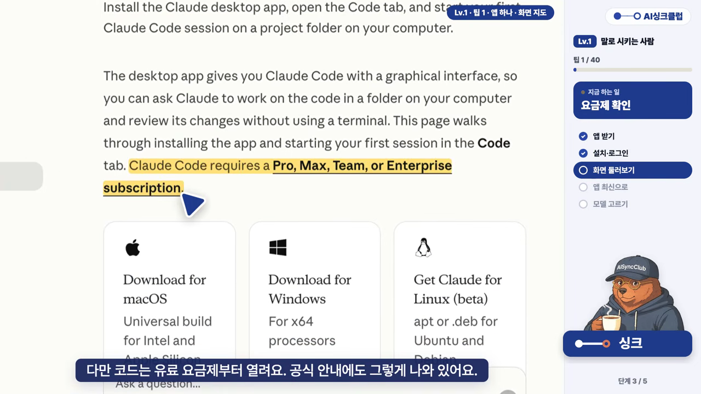
모델은 넷 중에서 골라요. 앱을 처음 한 번 최신으로 올려야 새 모델이 보여요.
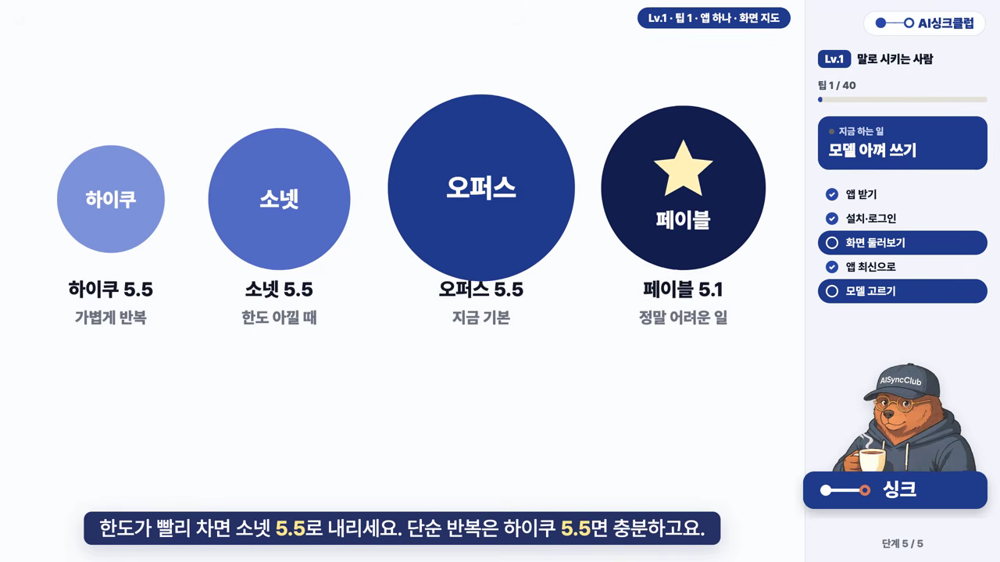
모델 옆 '중간' 단추는 클로드가 얼마나 깊게 생각할지 정해요. 평소엔 추천값인 중간 그대로 두고, 꼭 맞아야 하는 어려운 일만 높음으로 올려요. 올릴수록 꼼꼼하지만 느리고 사용량도 빨리 차요.
팁 2. 폴더째 맡기고 파일로 받아요
채팅창이라면 엑셀 세 개를 붙여 넣고 답을 다시 복사했겠죠. Claude Code는 내 컴퓨터의 파일을 직접 열어요. 발표자는 서류철째 비서에게 맡기는 것에 빗대요.
- 연습 폴더만 열어요 — 입력창 위 폴더 칩에서 엑셀 세 개가 든 폴더 하나만 골라요. 처음엔 이게 안전해요.
- 권한 모드를 '수동'으로 둬요 — 기본은 '자동'이에요. 수동이면 명령마다 먼저 물어보고, '한 번만 허용'을 누르면 돼요.
- 한 줄로 시켜요 — "이 폴더 엑셀로 주간 보고서 만들어."
- 일하는 중에도 말을 걸어요 — 멈추지 않고 "표는 맨 위로"라고 치고 엔터를 누르면 방향이 바뀌어요. 총매출이 4,368,000원으로 나오면 맞게 된 거예요
클로드가 일한 시간은 허용을 기다린 시간을 빼고 1분 30초쯤이에요. 합계가 원본과 맞는지도 스스로 다시 확인했어요. 아래는 발표자가 나눠 주는 실습 자료의 '확인' 칸과 결과 엑셀이에요.
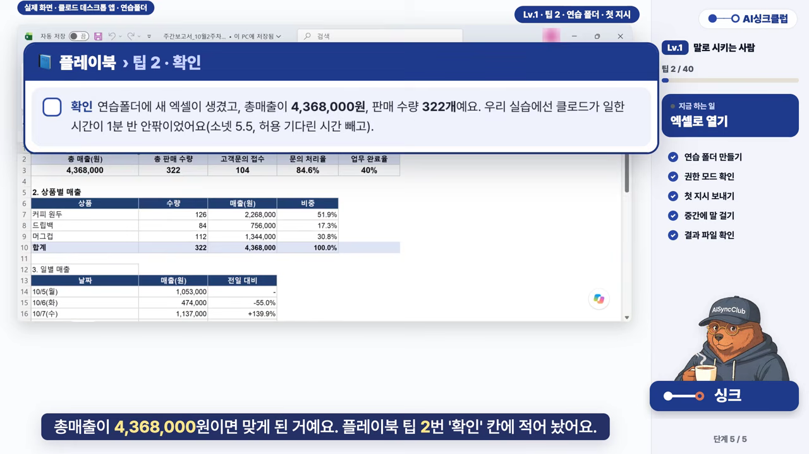
잘 시키는 법: 네 칸, 완료 조건, 이유 한 줄
폴더째 맡기는 데까지 왔으니 남은 건 지시문이에요. 발표자는 Claude Code 팀원이 X에 올린 글을 보여 줘요. '클로드가 한 방에 만들었다'는 글 뒤에는 대개 좋은 관점과 스킬, 예시, API 키까지 담은 1만 자짜리 지시문이 있다는 내용이에요. 팁 3부터 7까지는 그 지시문을 잘 쓰는 법이에요.
| 팁 | 막히는 상황 | 이렇게 시켜요 |
|---|---|---|
| 3 | "이번 주 매출 요약해 줘"에 밋밋한 답이 와요 | 무엇을, 왜, 누가 볼지, 어떤 모양으로를 함께 말하고 "위 자료로만 써 줘"를 붙여요 |
| 4 | 하나씩 시키면 붙어 있어야 하고, 통째로 맡기면 너무 많이 해요 | 통째로 맡기되 완료 조건을 붙여요 |
| 5 | 머릿속엔 있는데 글로 안 나와요 | 클로드가 나를 인터뷰하게 해요 |
| 6 | 지시문을 뭐부터 써야 할지 막막해요 | 지시문 초안도 클로드에게 쓰게 해요 |
| 7 | "잘 생각해", "다시 확인해"를 붙였더니 느려져요 | 강조 문구 대신 이유를 한 줄 말해요 |
팁 3. 똑똑한 신입에게 맡기듯
발표자는 클로드를 '똑똑하지만 우리 회사 사정은 하나도 모르는 신입'으로 보라고 해요. Anthropic의 프롬프트 가이드도 같은 비유를 쓴다고 해요. 그래서 네 가지를 함께 말해요. 무엇을, 왜, 누가 볼지, 어떤 모양으로요. 자료는 입력창에 @를 치고 파일 이름을 골라 붙여요. 끝에 "위 자료로만 써 줘"를 붙이면 자료에 없는 말이 덜 섞여요.
팁 4. 완료 조건을 붙여요
하나씩 쪼개 시키면 결국 옆에 붙어 있어야 해요. 통째로 맡기면 이번엔 시키지 않은 단계까지 붙여요. 발표자가 띄운 공식 가이드에도 최신 모델이 요청하지 않은 단계를 더한다는 문장이 있어요. 그래서 통째로 맡기되 '이게 되면 끝'을 같이 말해요.
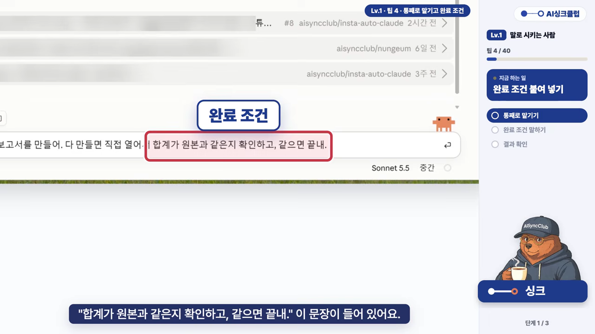
그러면 클로드가 보고서를 만든 뒤 직접 열어서 합계를 원본과 맞춰 봐요. 결과 화면의 빨간 줄이 그 보고예요.
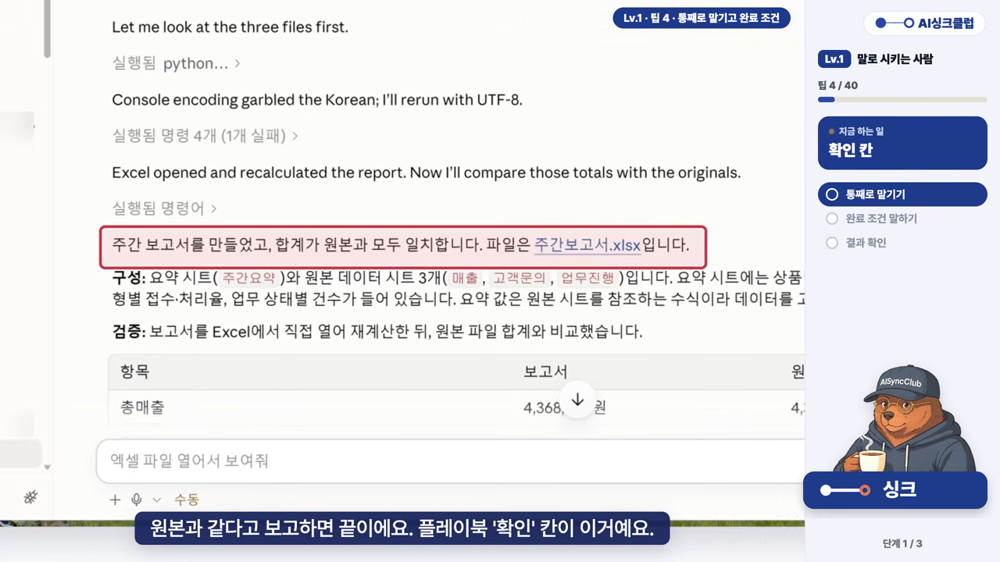
팁 5·6. 인터뷰하고, 초안도 맡겨요
무엇을 말해야 할지 나도 모를 때는 클로드가 먼저 질문하게 해요. Claude Code 공식 모범 사례에 있는 방법이라고 해요. 하고 싶은 일을 한 줄 붙여 보내면 객관식 카드로 물어 오고, 나는 고르기만 해요. 다 고르면 "내 답만으로 한 장 정리해. 네 짐작은 따로 표시해"를 보내요. 내 답과 클로드의 짐작이 나뉘어 나오면 잘 된 거예요. 더 세게 캐묻는 커뮤니티 스킬 grill-me도 있어요.
지시문을 쓰기 막막하면 초안도 클로드에게 써 달라고 해요. 모르는 건 먼저 물어 오고, 나온 초안을 새 대화에 붙여 넣고 내 사정에 맞게 손봐요. 이미 써 둔 지시문이 있으면 "애매한 데부터 짚고, 고친 이유도 보여 줘"라고 해요.
팁 7. 강조 문구 대신 이유
예전 AI(Artificial Intelligence)에는 "잘 생각해", "다시 확인해", "절대 하지 마" 같은 말이 먹혔어요. 요즘 모델은 시키지 않아도 생각하고 확인하니, 거기에 강조까지 붙이면 오히려 느려지고 일을 키운다고 해요.
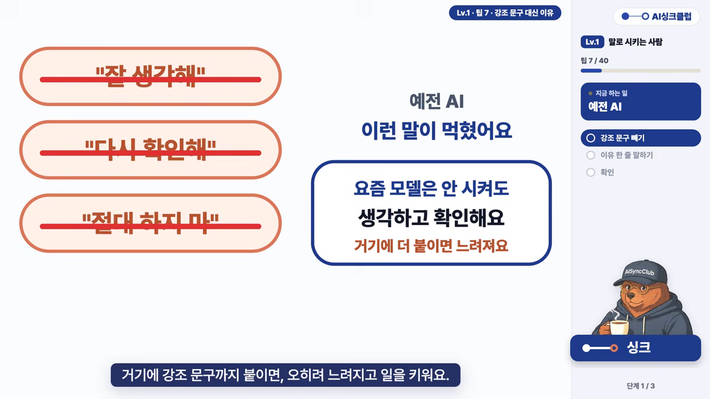
대신 이유를 말해요. 신입에게 "실수하지 마"보다 "임원 보고라 한 장이어야 해"가 나은 것처럼요. "이 보고서는 임원 회의용이라 한 장이어야 해"라고 넣으니 보고서가 한 장으로 나왔어요.
계획 보기, 되돌리기, 사용량 아끼기
일이 커지면 클로드가 엉뚱한 쪽으로 한참 가요. 2단계는 계획부터 보고, 망치면 되돌리고, 사용량이 왜 빨리 차는지 아는 단계예요. 화면의 카드 세 장이 팁 8~10이에요.
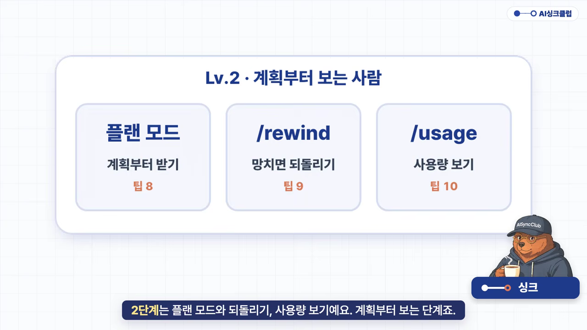
팁 8. 플랜 모드로 도면부터
큰 일을 바로 시키면 다 만들고 나서야 방향이 틀린 걸 알아요. 발표자는 공사 전에 도면부터 보라고 해요. 입력창 왼쪽 아래 권한 모드에서 '계획(영어 앱은 Plan)'을 골라요. 그리고 "파일은 건드리지 말고 계획만 보여 줘"를 보내요. 계획을 읽고 고칠 곳은 '수정'을 눌러 "3단계는 빼고, 나머지는 이대로 시작해"처럼 말해요. 그제야 파일이 생겨요.
팁 9. 망치면 /rewind, 딴 길은 /fork
파일을 엉망으로 고쳐 놓으면 /rewind로 되감아요. 게임 세이브를 불러오듯 돌아갈 지점을 고르면 돼요. 발표자는 일부러 메모 파일을 망친 뒤 되감아 보여 줘요.
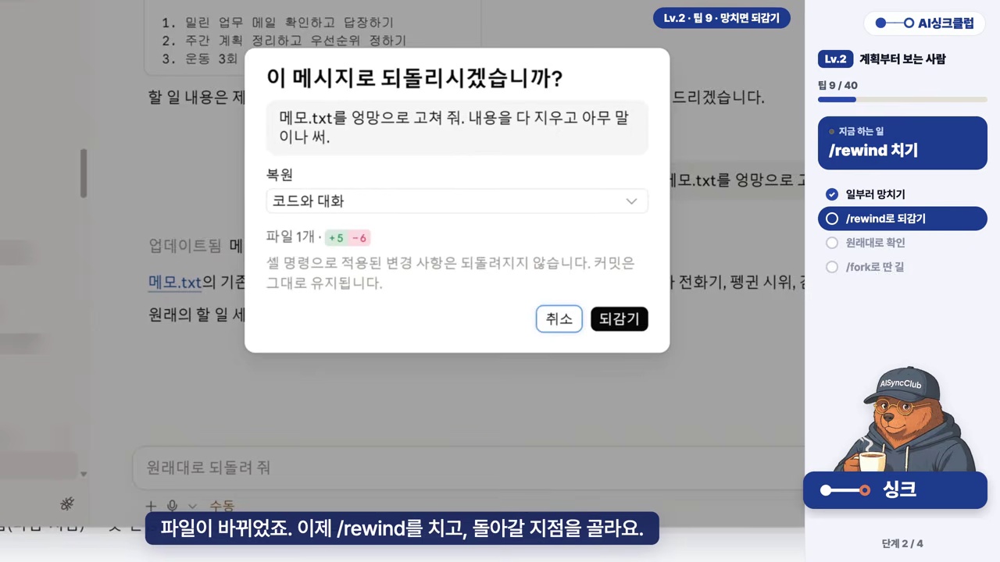
주의할 점이 하나 있어요. 되감기로 돌아오는 건 클로드가 직접 고친 파일뿐이에요.
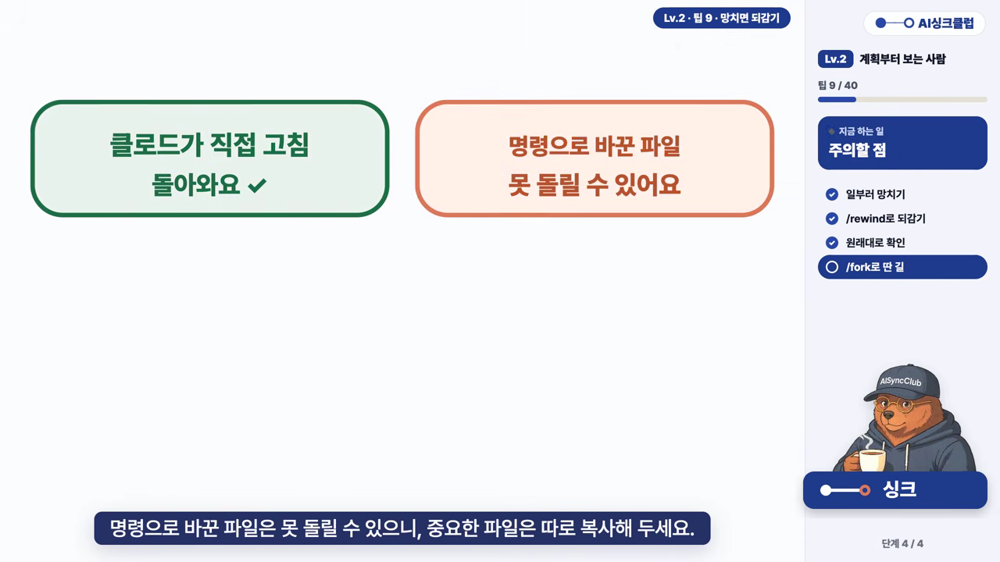
다른 방법을 시험해 보고 싶을 땐 /fork예요. 지금 대화를 새 세션으로 복사해 줘요.
팁 10. 사용량은 왜 빨리 찰까요
Claude Code는 구독 안에서 써서 토큰값이 따로 나가지 않아요. 한도가 차면 기다리면 되고, 얼마나 썼는지는 /usage로 봐요. 발표자는 한도가 빨리 차는 이유를 찾으려고 자기 컴퓨터에 남은 Claude Code 기록 438개를 다 열어 봤어요.
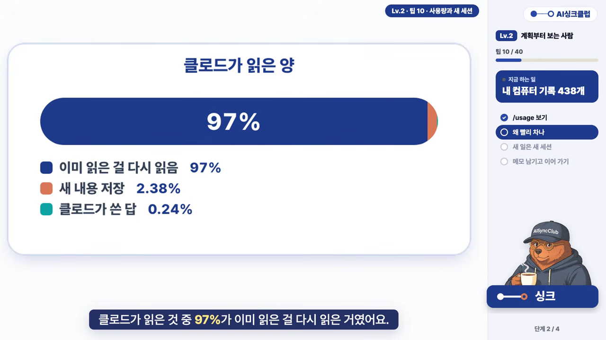
대화가 길어질수록 매번 처음부터 다시 읽기 때문이에요. 그래서 일이 바뀌면 새 대화로 가요. 왼쪽 위 '새로 생성'이나 /clear예요. 대화가 꽉 차면 요약하지 말고, 진행 메모를 파일로 남긴 뒤 새 대화에서 그 메모를 읽고 이어 가요. 발표자가 띄운 Anthropic 가이드도 컨텍스트를 비울 때 요약보다 새로 시작하라고 한다고 해요. 가볍게 반복하는 일은 Haiku 5.5로 돌리고요.
CLAUDE.md와 스킬로 한 번만 가르치기
새 대화를 열면 클로드는 우리 회사를 또 몰라요. 3단계는 한 번 가르쳐 두는 단계예요. 회사 규칙은 CLAUDE.md에, 일하는 요령은 스킬에 적어요. 발표자는 여기부터 중급이라고 해요.
팁 11. CLAUDE.md는 인수인계서
CLAUDE.md는 새 대화마다 클로드가 먼저 읽는 메모 파일이에요. 만드는 법은 입력창에 /init 한 줄이에요. 클로드가 폴더를 읽고 써 줘요. 그다음엔 실습 자료의 문장 세 개면 충분해요.
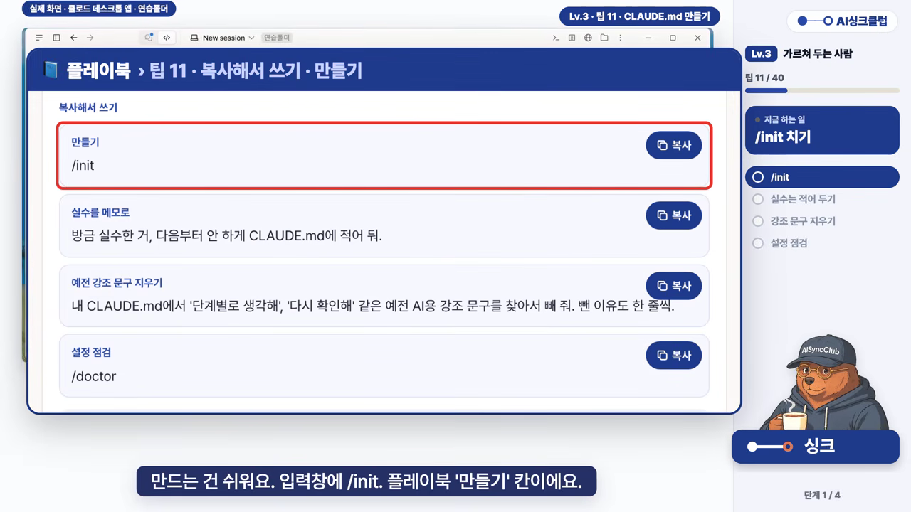
길이는 200줄 안으로 짧게 두라고 해요. 길면 클로드가 지시를 덜 지킨다는 게 공식 안내라고 해요. 가끔 "단계별로 생각해", "다시 확인해" 같은 예전 강조 문구를 찾아 지우는 청소도 해요. 매번 읽히는 파일이라 새 모델을 느리게 하거든요. 설정이 이상하면 /doctor로 점검하고, 자주 손볼 거면 공식 플러그인 claude-md-management를 깔아요.
스킬과 플러그인
스킬은 클로드가 읽는 업무 매뉴얼이에요. 파일 이름은 SKILL.md예요. 클로드는 스킬 설명을 보고 일에 맞는 걸 알아서 꺼내 보고, /이름으로 직접 불러도 돼요. 플러그인은 스킬이나 기능 여러 개를 한 번에 담은 묶음 상자예요. 발표자는 스킬을 추천받고, 깔고, 만들고, 고치는 한 바퀴를 돌아요.
flowchart LR A["추천받기
claude-code-setup"] --> B["깔기 전 읽히기
'읽어만 줘'"] --> C["설치
플러그인 화면 · ZIP"] --> D["만들기
/skill-creator"] --> E["고치기 · 정리
말로 · /skill-doctor"]
팁 12·13. 추천받고, 명령어 없이 깔아요
무엇을 깔지 모르겠으면 Anthropic이 만든 claude-code-setup 플러그인에게 추천을 맡겨요. 내 폴더를 읽고 추천만 하는 안내 데스크라 아무것도 깔지 않아요. 입력창의 + 버튼 → 플러그인 추가로 들어가 검색하면, 만든 곳에 Anthropic이 떠요.
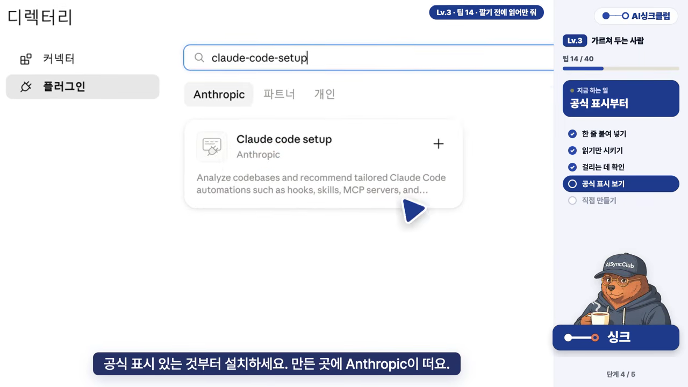
좋은 스킬은 대부분 GitHub에 있어요. 별은 추천 수, 최근 커밋은 마지막으로 손본 날이니 둘 다 높은 것부터 봐요. 설치 길은 둘이에요. 하나는 플러그인 화면에서 마켓플레이스를 추가하는 거예요. 주소 칸에 anthropics/skills를 넣고 동기화하면 워드, 엑셀, PPT(PowerPoint), PDF(Portable Document Format)를 만드는 공식 문서 스킬이 보여요.
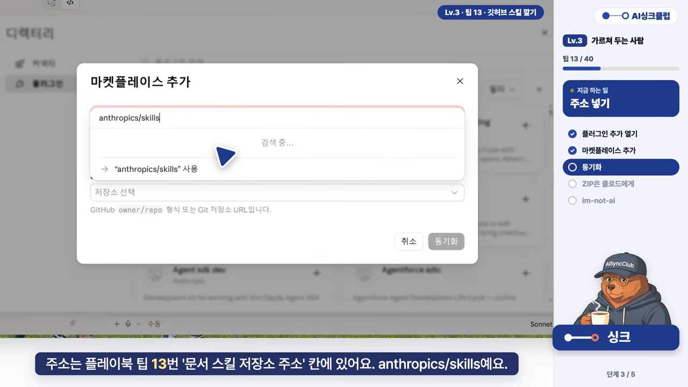
다른 하나는 압축 파일(.zip)을 받아 클로드에게 설치를 맡기는 거예요. 설치 전에 무엇이 들어 있는지 먼저 보여 달라고 하고, 나는 승인만 눌러요. 발표자는 한글 문장에서 AI 티를 빼 주는 커뮤니티 스킬 im-not-ai를 이렇게 깔았어요.
그래도 안 깔릴 때가 있어요. 발표자의 컴퓨터에서도 플러그인 목록이 텅 비었는데, 클로드에게 물어보니 깃이 없어서였어요. 깃 설치도 클로드에게 맡기고 앱을 다시 켜니 목록이 떴어요. Node.js가 필요한 설치는 처음엔 건너뛰어도 된다고 해요.
팁 14. 깔기 전에 클로드에게 먼저 읽혀요
플러그인은 내 권한으로 코드를 돌릴 수 있어요. 발표자는 모르는 사람에게 집 열쇠를 맡기는 것에 빗대요. 올해 2월 다른 AI 도구의 스킬 마켓에서 악성 스킬 341개가 나왔고, 다른 조사에서는 열에 하나 넘게 심각한 문제가 있었다고 해요.
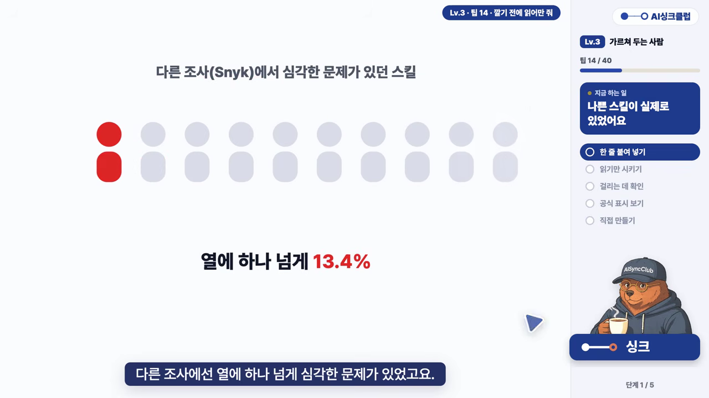
그래서 설치 전에 "설치하지 말고 읽어만 줘. 위험한 데 있으면 짚어 줘"를 보내고 저장소 주소를 붙여요. 클로드가 보고만 하고 설치는 안 하면 성공이에요. 공식 표시가 있는 것부터 깔아요.
팁 15·16. 내 스킬을 만들고 고쳐요
내 일에 딱 맞는 스킬은 어디에도 없어요. 입력창에 /skill-creator를 치면 클로드가 선배처럼 인터뷰하며 매뉴얼을 대신 써 줘요. 발표자는 Anthropic 직원들이 많이 쓴다는 '아무것도 모르는 사람에게 설명해 줘' 스킬을 /eli5로 만들어요. "모르는 사람에게 설명하듯, 큰 그림과 글 조금으로"가 핵심 답이었고, /eli5 MCP를 치니 네 칸짜리 그림이 나왔어요.
더 쉬운 길도 있어요. 1단계의 주간 보고서를 받은 뒤 "방금 한 거 스킬로 만들어 줘. 이름은 주간보고"라고 하면, 다음부턴 /주간보고 한 줄이면 돼요. 처음 만든 스킬이 딱 맞지 않으면 "주간보고 스킬 고쳐 줘. 표는 맨 위로"처럼 말로 고쳐요. 남이 만든 스킬은 플러그인 화면에서 업데이트를 누르고, 스킬이 쌓이면 /skill-doctor로 안 쓰면서 자리만 차지하는 스킬을 찾아 지워요.
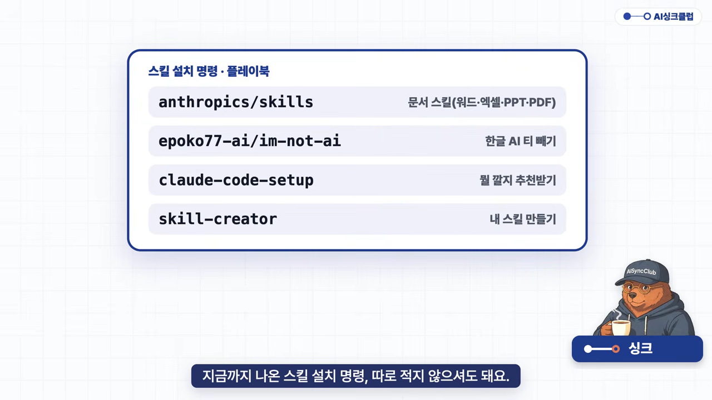
회사에 그대로 내는 엑셀·PPT·한글
스킬로 결과는 좋아졌지만, 회사에 내는 건 결국 엑셀과 PPT, 한글 파일이에요. 3단계의 마지막은 회사에 그대로 낼 수 있는 파일을 받는 법이에요.
팁 17. 엑셀은 숫자 말고 수식으로
AI가 만든 엑셀을 열어 보면 계산 과정 없이 숫자만 박혀 있어요. 원본 숫자 하나만 바뀌어도 처음부터 다시 시켜야 하고, 부장님이 "이 숫자 어디서 나왔어?" 하면 말문이 막혀요. 발표자는 거래 명세서 PDF 한 장을 넣고 이렇게 시켜요. "이 거래 명세서 PDF의 품목을 엑셀로 정리해. 계산은 수식으로 넣어."
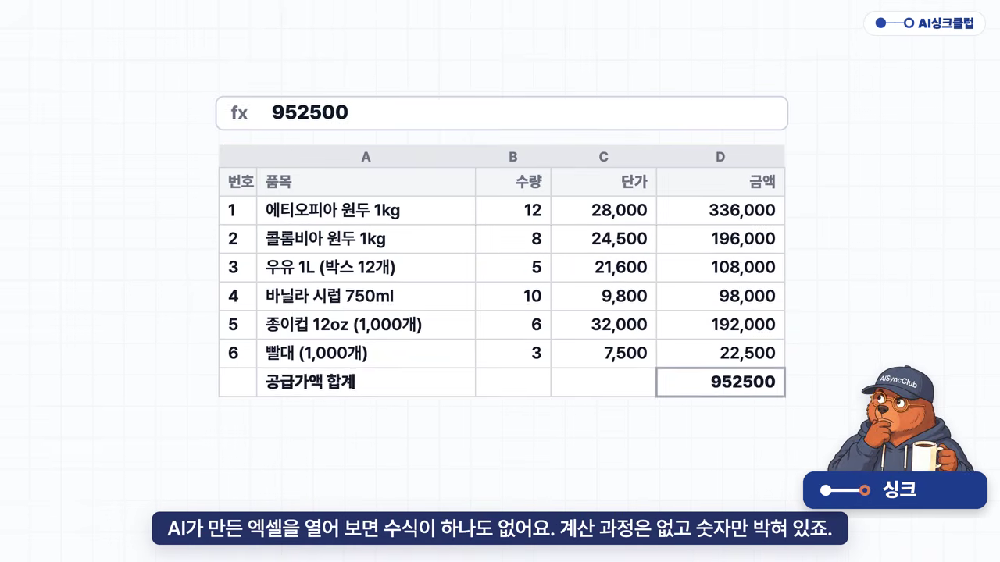
엑셀이 나오기까지 1분 30초쯤 걸려요. 합계 칸을 누르면 숫자가 아니라 수식이 들어 있어서 나중에 내가 고쳐 써도 돼요. "합계가 어느 셀에서 왔는지 짚어 줘"도 같이 시켜 보래요.
엑셀 안에서 바로 쓰고 싶으면 Claude for Excel이 있어요. 엑셀 옆에 클로드 창이 붙는 추가 기능이고, "이 합계 어디서 왔어?"라고 물으면 근거 셀을 짚어 줘요. 조건은 공식 안내 화면에 있어요.
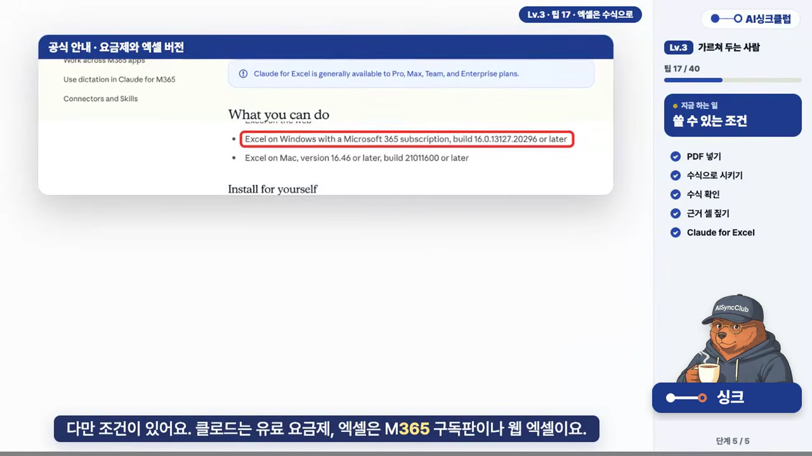
남이 준 파일은 복사본으로 작업하래요.
팁 18. PPT는 구성 → 2장 → 전체
AI가 처음부터 다 만든 PPT는 우리 회사 것 같지 않아서 결국 다시 만들게 돼요. 그래서 순서를 셋으로 나눠요.
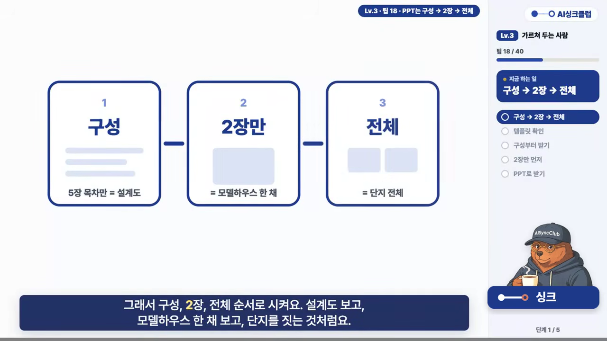
"5장 구성부터 보여 줘. 괜찮으면 2장만 먼저 만들어." 2장이 마음에 들면 나머지를 맡겨요. 길은 회사 템플릿이 있느냐로 갈려요. 있으면 파워포인트 안에서 쓰는 Claude for PowerPoint로 회사 템플릿과 기본 차트를 그대로 써요(유료). 없으면 Claude Slides를 쓰는데 무료 요금제에서도 돼요. 같은 날 Dashboards와 Motion도 베타로 나왔다고 해요. 다 만들면 PPT나 PDF로 내보내요.
팁 19. 한글 공문은 빈 양식에 칸만 채워요
AI에게 공문을 새로 만들게 하면 양식 모양이 틀어지고 쪽수가 바뀌거나 글자가 깨져요. 그래서 있는 양식을 주고 칸만 채우게 해요.
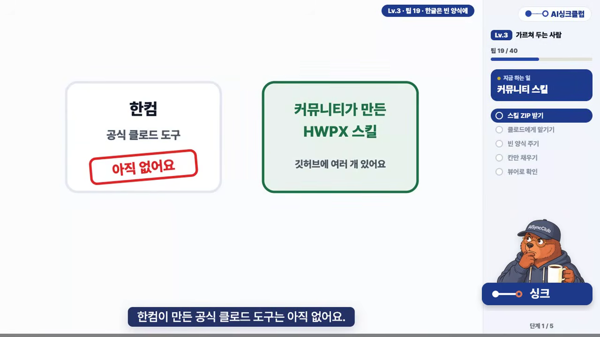
- 스킬 압축 파일을 받아 설치를 맡겨요 — "이 ZIP 스킬 설치해 줘." 1분 20초쯤 걸렸어요.
- 빈 양식을 주고 칸만 채우게 해요 — "이 빈 공문 양식에 칸만 채워 줘. 양식 모양은 바꾸지 마."
- 한글에서 꼭 열어 봐요 — 쪽수가 맞는지, 글자가 안 깨졌는지요. 한글이 없으면 한컴 공식 사이트의 한컴오피스 뷰어로 열어 봐요(보기 전용). 쪽수가 맞고, 내용을 안 준 칸은 그대로 비어 있으면 성공이에요
옛 .hwp 파일은 읽기 위주라 양식은 .hwpx로 저장해서 주래요. 암호 걸린 파일은 안 돼요.
커넥터·API로 잇고 조사 제대로 시키기
회사 양식대로 파일은 나오는데, 자료는 아직 메일, 드라이브, 노션에 흩어져 있어요. 4단계는 클로드를 다른 앱과 데이터에 잇는 단계예요. 커넥터, MCP(Model Context Protocol), API, 그리고 조사 시키는 법까지 다뤄요.
발표자는 먼저 오해 하나를 풀어요. 얼마 전까지 'MCP는 토큰 먹는 하마'라는 영상이 많았지만, Claude Code 팀원은 9월에 생각을 바꿔 이제는 MCP가 낫다고 했대요. 대신 안 쓰는 커넥터는 꺼 두라고 했대요. MCP는 앱을 클로드에 꽂는 공통 규격이에요. 클로드는 똑똑하지만 내 앱을 열 손이 없으니, 앱마다 플러그를 꽂아 주는 거예요. Claude 앱에서는 이걸 커넥터라고 불러요.
팁 20·21. 커넥터를 켜고 "가서 가져와"
커넥터는 앱의 사용자 지정 → 커넥터에서 켜면 코드 탭에도 그대로 들어와요. 코드 쪽에 따로 설치할 필요가 없고, 명령어도 없어요. 로그인만 하면 끝이에요.
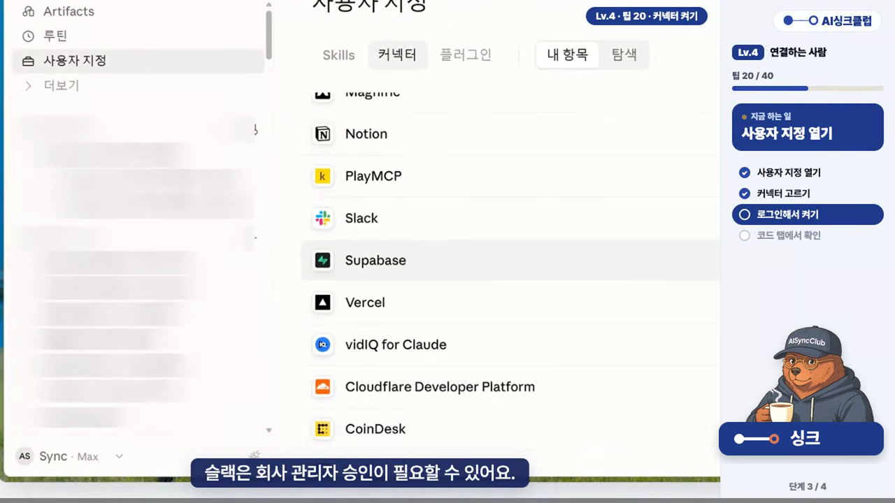
켰으면 이제 붙여 넣지 말고 시켜요. "지메일에서 답장할 메일만 골라서 노션에 정리해. 요약은 카톡 나와의 채팅으로 보내." 클로드가 지메일을 열고, 노션에 쓰고, 카톡으로 보내요. 결과는 휴대폰 카톡으로 오니 컴퓨터 앞에 갈 필요가 없어요. 보내기 전에 보고 싶으면 "카톡 보내기 전에 내용 먼저 보여 줘"를 붙여요.
팁 22. 내 컴퓨터 프로그램도 이어요
메일과 노션은 원래 인터넷에 있지만, 내 컴퓨터에 깔린 프로그램도 연결돼요. 발표자는 블렌더로 보여 줘요. 블렌더는 공식 커넥터가 있고 5.1 이상이면 돼요. 커넥터 탐색에서 Blender를 설치하고, 안내에 나온 설치 링크를 블렌더 창에 끌어다 놓고, 블렌더에서 서버 시작을 누르면 끝이에요.
그다음 "7단계 계단 만들어서 렌더해 줘" 한 줄을 보내요.
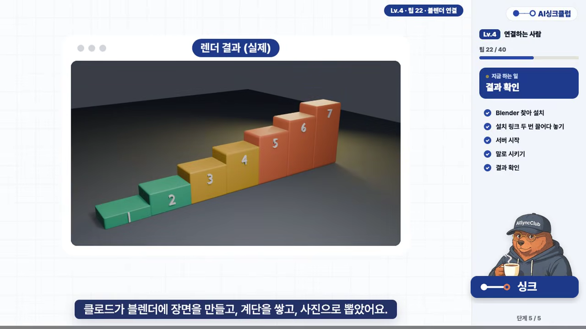
팁 23. 겹치는 예전 MCP는 정리해요
예전에 이것저것 깔아 둔 MCP 중 일곱 개는 이제 지워도 된다고 해요. Claude Code에 이미 들어 있는 기능이라서요.
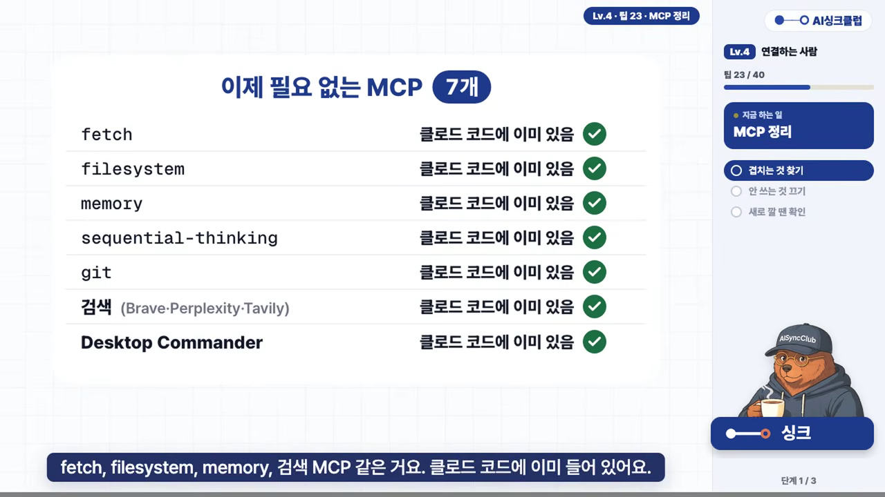
새로 깔 땐 조심해요. 올해 보안 사고가 난 MCP가 여럿이라고 해요. 기준은 두 가지예요.
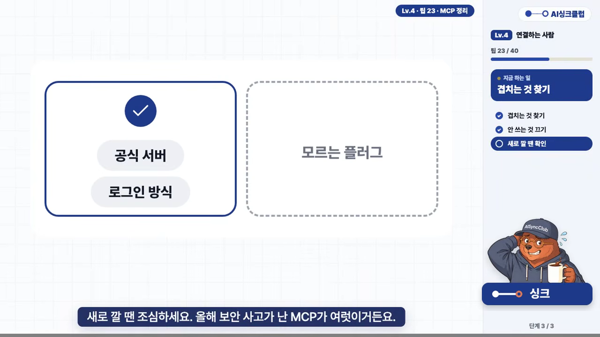
팁 24·25. MCP가 없으면 API, 키는 .env에
환율이나 공공 데이터처럼 MCP가 없는 건 API로 이어요. API는 프로그램끼리 주고받는 편지이고, API 키는 그 편지함 비밀번호예요. 고르는 순서는 간단해요.
flowchart LR
Q{"그 앱에 MCP가 있나요?"} -->|있어요| M["커넥터를 켜고 로그인"]
Q -->|없어요| A["API로 잇기"]
A --> K[".env에 키 자리 만들기"] --> P["키는 내가 직접 붙여 넣기"] --> S["시험 호출 후 쓰는 법을 스킬로 저장"]
가입 없이 바로 해 보는 API로 한국은행 ECOS(Economic Statistics System)를 써요. "한국은행 ECOS로 지난주 원·달러 환율 가져와서 엑셀로 만들어 줘. 시험용 sample 키로 해." 원·달러 환율이 엑셀 표로 나왔어요.
내 키를 쓸 때가 중요해요. 키는 채팅에 붙여 넣지 말고, ".env 파일에 빈칸 만들어 줘"라고 시킨 뒤 파일 창에서 .env를 열어 내가 직접 붙여 넣어요.
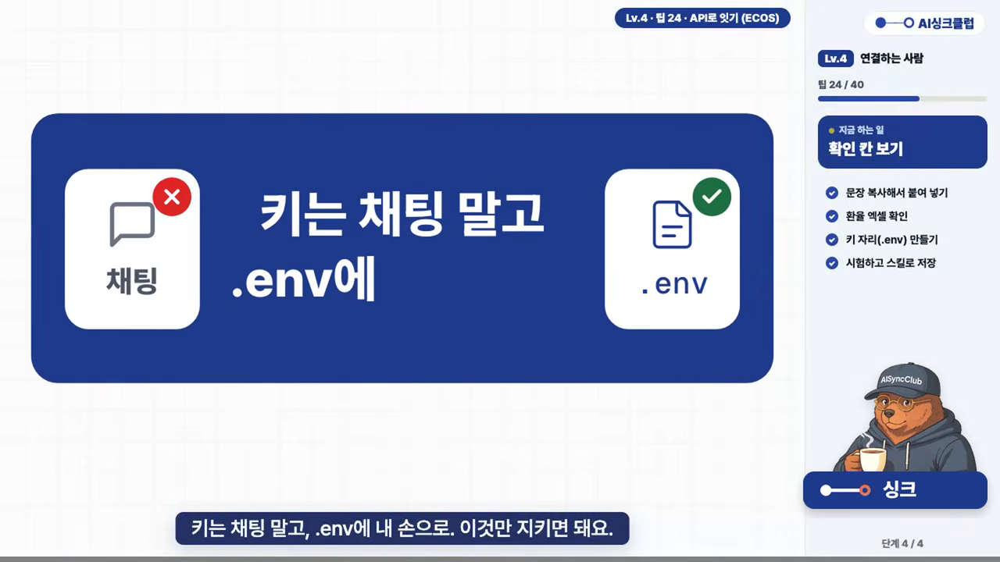
돈 드는 API도 방법은 같아요. 발표자는 글을 읽어 주는 AI 음성 서비스 일레븐랩스로 대본을 한국어 MP3(MPEG-1 Audio Layer III)로 만들어요. "만들기 전에 몇 글자인지 먼저 알려 줘"를 붙이면 크레딧을 아껴요. 무료 요금제는 한 달 1만 크레딧이고 한 글자가 1크레딧쯤이라, 300자 대본이면 300크레딧 정도예요. 무료로 만든 건 상업용으로 못 쓰고, 남의 목소리는 복제하면 안 돼요.
키는 채팅, 화면, GitHub 어디에도 남기면 안 돼요. GitHub에 올리지 않을 파일 목록인 .gitignore에 .env를 넣어 달라고 하래요.
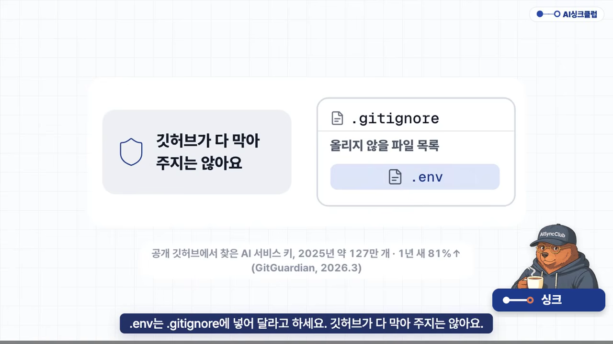
팁 26·27. 조사에도 완료 조건을
그냥 "찾아 줘" 하면 어디서 나온 건지 모르는 답이 와요. 옛날 얘기일 수도 있고요. 조사에도 완료 조건을 붙여요. "공식 출처 1곳 포함 3곳 이상 확인해. 링크와 날짜를 붙이고, 다르면 표시해."
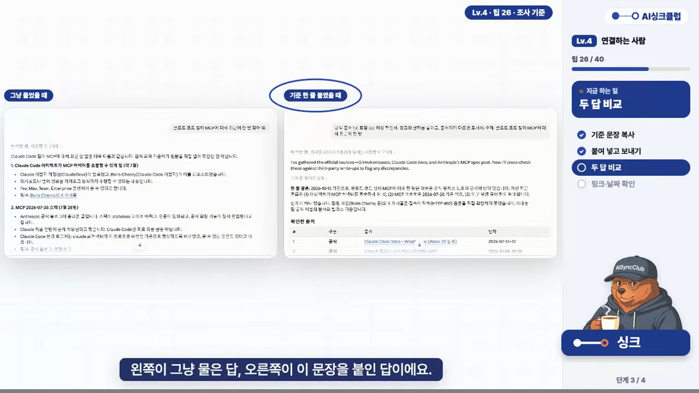
주제가 크면 한쪽 얘기만 잔뜩 모아 오기도 해요. 그래서 깊은 조사는 관점을 나눠, 다섯 에이전트가 서로 반박하게 시켜요. 채팅 탭에서는 + 메뉴의 '연구'를 켜면 되고, 코드 탭에서는 이렇게 시켜요. "관점 5개로 나눠서 에이전트들이 동시에 조사해. 서로 반박하게 한 뒤 정리해."
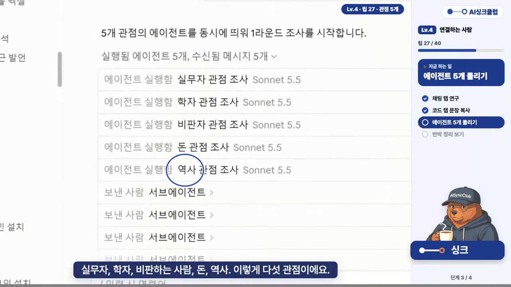
팁 28. 못 읽는 사이트는 이유별로
조사하다 보면 클로드가 "그 사이트는 못 읽어요"라고 해요. 이유가 셋이고, 이유마다 방법이 달라요.
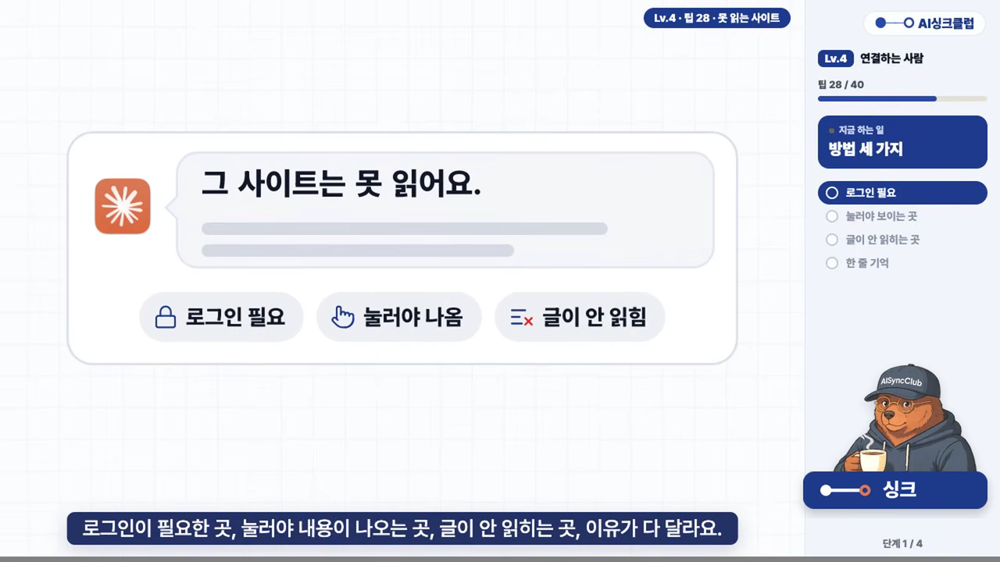
| 이유 | 방법 | 조건 |
|---|---|---|
| 로그인이 필요해요 | Claude in Chrome — 내 크롬에 로그인된 그대로 클로드가 대신 눌러요 | 유료 요금제부터 |
| 눌러야 내용이 나와요 | 코드 탭 내장 브라우저로 열어 보게 해요 | 공개 페이지 |
| 글이 안 읽혀요 | 주소 앞에 r.jina.ai/를 붙여요 | 키 없이 되지만 공개 페이지만 |
서브에이전트와 훅으로 팀 꾸리기
시킬 일이 많아지면 한 줄 시키고 기다리다 하루가 가요. 일이 한 대화창에 쌓여 대화도 길어지고요. 5단계는 일을 나눠 맡을 팀을 꾸리는 단계예요. 서브에이전트와 훅을 다루고, 발표자는 여기부터 고급이라고 해요.
먼저, 사용량을 아끼는 어드바이저
Opus 같은 큰 모델만 계속 쓰면 한도가 금방 차요. 발표자는 어드바이저 기능을 권해요. 평소엔 Sonnet이 일하고, 막힐 때만 Opus에게 조언을 구하는 방식이에요. 입력창에 /advisor opus를 치면 돼요.
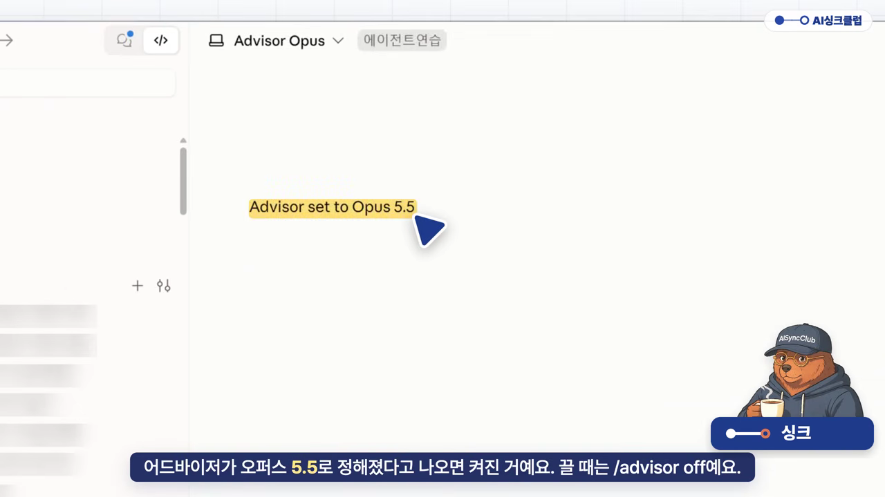
/advisor off예요.
영상 40:45에서 보기
계획만 Opus로 돌리는 opusplan도 있지만 데스크톱 앱에서는 아직 못 쓴다고 해요.
팁 29. 서브에이전트는 말로 만들어요
서브에이전트는 내 대화창과 따로 일하는 직원이에요. 직원마다 자기 책상이 있어서 조사하고 일한 기록은 그 책상에 쌓이고, 내 대화창에는 결과만 올라와요. 그래서 일이 많아져도 내 대화는 길어지지 않아요.
Claude Code에 원래 있는 탐색 서브에이전트는 지금 쓰는 모델을 그대로 따라가요. Opus로 일하면 단순한 파일 찾기도 Opus가 해서 사용량이 아까워요. 그래서 직접 만들어요. 서브에이전트는 파일 하나이고, 할 일과 쓸 도구, 모델 세 가지만 적혀 있어요.
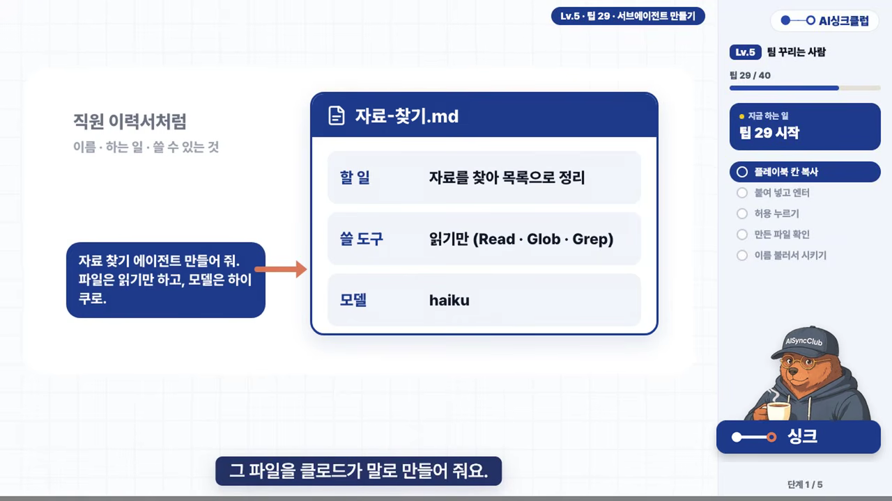
새 세션을 열고 이름을 불러 시키면 오른쪽 작업 창에서 Haiku 직원이 일하는 게 보이고 결과 목록이 올라와요. 안 불러지면 이름을 정확히 불러 주래요.
팁 30. 조사, 작성, 검수를 동시에
조사가 끝나야 쓰고, 다 써야 검수하는 동안 나는 화면만 봐요. 서브에이전트는 동시에 돌릴 수 있어요. "이 주제로 조사, 작성, 검수 에이전트를 동시에 돌려. 검수는 출처 링크가 열리는지 봐."
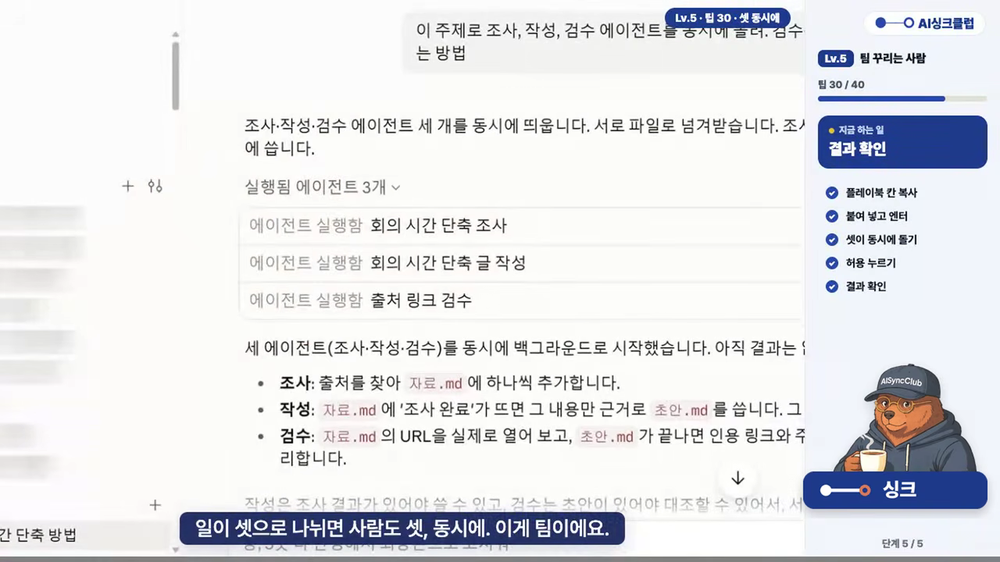
웹을 검색하거나 링크를 열 때는 수동 모드라서 허용을 눌러야 해요. 기다리는 동안 다른 일을 해도 돼요. 코드 탭에 '프로젝트'가 보이면 총괄 하나가 일을 나눠 맡겨 주는데, 아직 베타라 계정마다 안 보일 수 있고 발표자의 앱에도 아직 없다고 해요.
팁 31. 꼭 지킬 규칙은 훅으로
CLAUDE.md에 '이건 꼭 지켜'라고 적어도 가끔 빠져요. CLAUDE.md는 클로드가 따르려고 애쓰는 부탁이라서요. 훅은 정해진 순간에 저절로 실행되는 규칙이에요. 사람이 지나가면 켜지는 센서등처럼요.
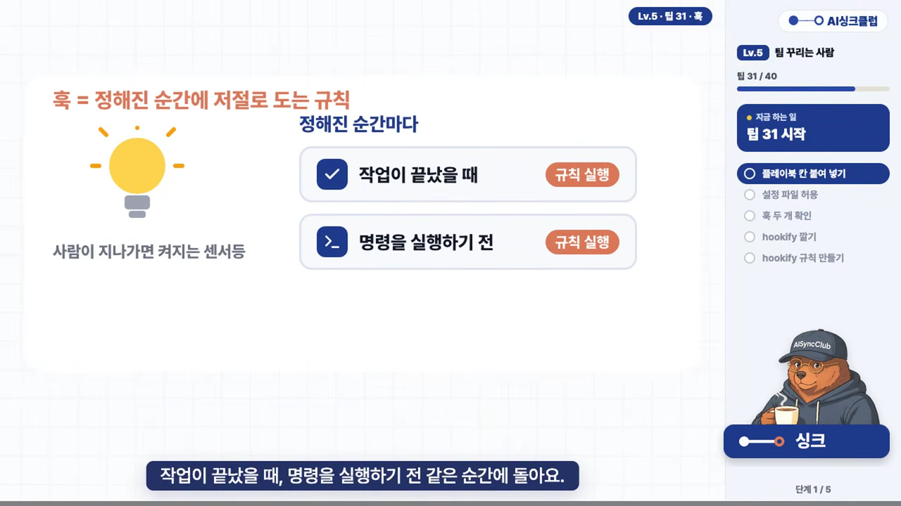
설정 파일은 몰라도 돼요. "작업 끝나면 알림, 위험한 삭제는 막기. 이 두 가지를 훅으로 만들어 줘." 설정 파일을 고치는 거라 허용이 필요해요.
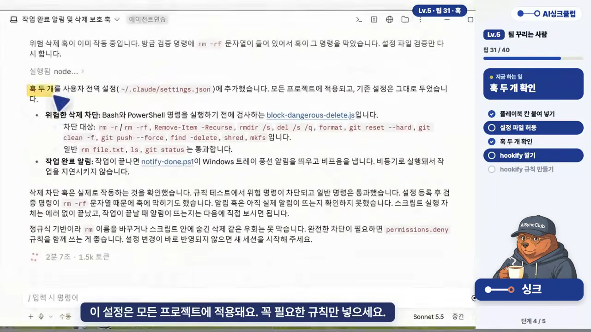
같은 보고의 아래쪽 문단도 읽어 볼 만해요. 클로드는 이 훅이 정규식 기반이라 명령 이름을 바꾸거나 스크립트 안에 숨긴 삭제는 못 막는다고 스스로 밝히고, 완전히 막으려면 permissions.deny 규칙을 함께 쓰라고 권해요. 알림 훅은 실제로 뜨는지 아직 확인하지 못했다고도 적었어요.
이 설정은 모든 프로젝트에 적용되니 꼭 필요한 규칙만 넣으래요. 규칙만 간단히 모으고 싶으면 hookify 플러그인을 깔고 /hookify 뒤에 말로 적으면 규칙 파일이 생겨요. 화면이나 동작을 바꾸고 싶으면 10월에 나온 모드도 말로 만들 수 있어요. 모드는 기본이 임시라 남기려면 플러그인으로 저장해 달라고 해요.
여기까지를 엮으면
발표자는 1~5단계의 팁을 엮은 일 세 가지를 보여 줘요. 칸 아래 번호가 쓰인 팁이에요.
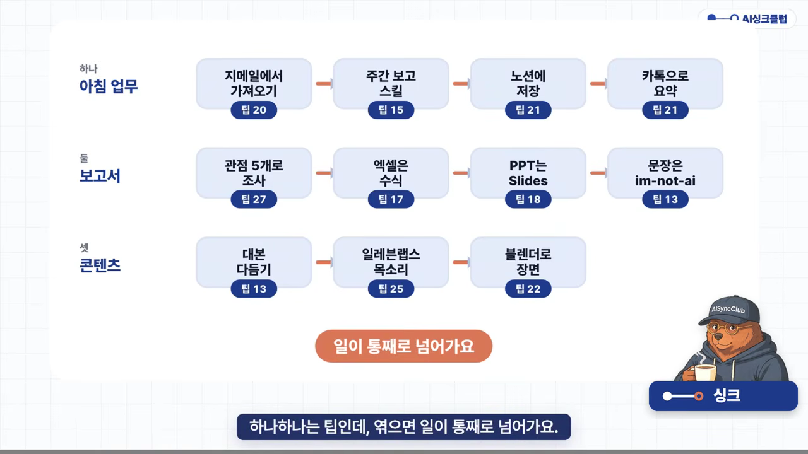
디자인하고 앱 만들어 올리기
지금까지 쓴 앱은 모두 남이 만든 거예요. 6단계는 디자인을 정하고, 눌리는 앱을 만들고, 인터넷에 올리고, 망가지지 않게 지키는 단계예요. 발표자는 앱까지 가 볼 사람만 따라오라고 해요.
팁 32. AI 티는 디자인 스킬로 막아요
아무 말 없이 시키면 클로드는 늘 무난한 모양으로 만들어요. 실마리는 '하지 말 것'을 이름으로 말하는 거예요.
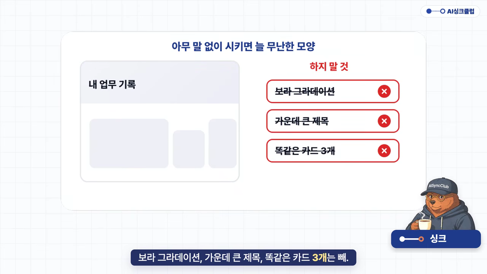
매번 "이거 빼, 저거 빼" 하기는 번거로우니 디자인 설명서, 즉 스킬을 깔아 둬요. 플러그인 화면에서 Anthropic 공식 frontend-design을 설치하고, 같은 화면을 스킬로 다시 만들어 달라고 해요. 더 다듬고 싶으면 다듬는 명령 24개가 있는 커뮤니티 스킬 Impeccable도 있어요.
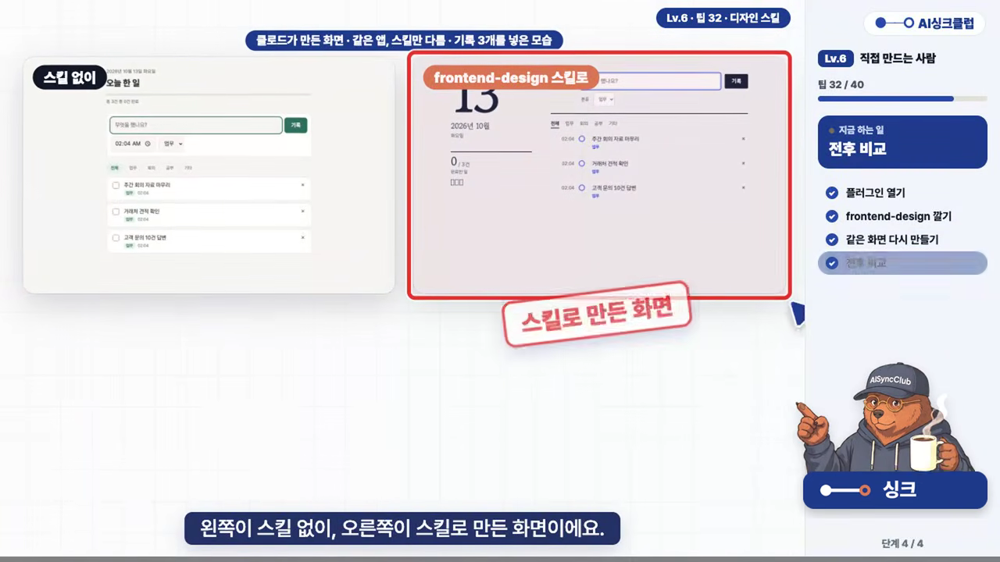
팁 33. 참고 화면은 스크린샷으로, 시안은 셋
마음에 드는 사이트 링크만 주면 화면 느낌이 잘 안 넘어가요. 눈으로 보여 주는 게 스크린샷이에요. 발표자는 오늘 만들 '개인 업무 기록 앱'의 참고 화면 세 장을 입력창에 넣고, /design으로 시작하는 문장을 붙여요. 시안이 세 개 펼쳐지면 한 번에 맞히려 하지 말고 넓게 보고 골라요. 고른 시안은 DESIGN.md라는 디자인 규칙 파일로 저장돼요.
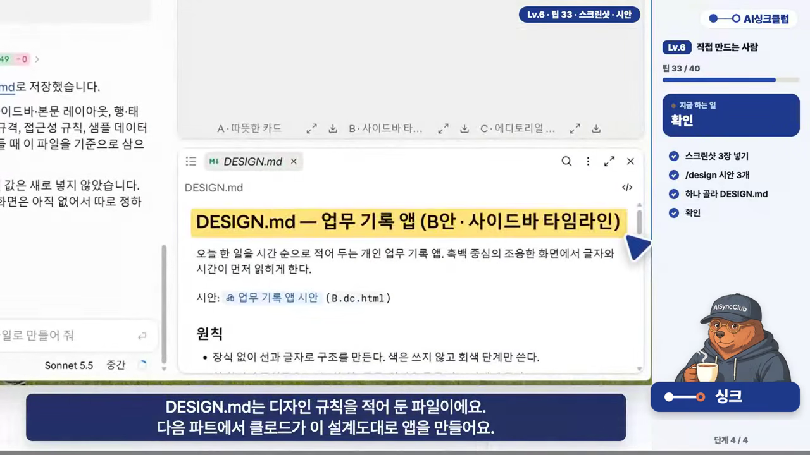
Claude 디자인은 무료 요금제에서도 쓸 수 있고, 한글 글꼴은 Pretendard를 쓰면 상업용으로도 괜찮다고 해요.
팁 34. 방법 말고 결과와 완료 조건
앱을 뭘로 만들지 몰라서 시작을 못 하는 경우가 많아요. 발표자는 식당에서 조리법이 아니라 메뉴를 시키듯 결과만 말하라고 해요. "DESIGN.md대로 개인 업무 기록 앱 만들어 줘. 오늘 한 일을 적으면 날짜별로 쌓이게. 휴대폰에서도 잘 보이면 끝. 다 되면 브라우저로 직접 눌러 보고 확인해."
마지막 문장이 가장 중요하대요. 클로드가 앱 안의 브라우저를 열고 직접 적어 보고 눌러 봐요. 미리보기에서는 저장이 막혀 있다는 걸 알아채고 방식을 바꿔 다시 확인하기도 했어요.
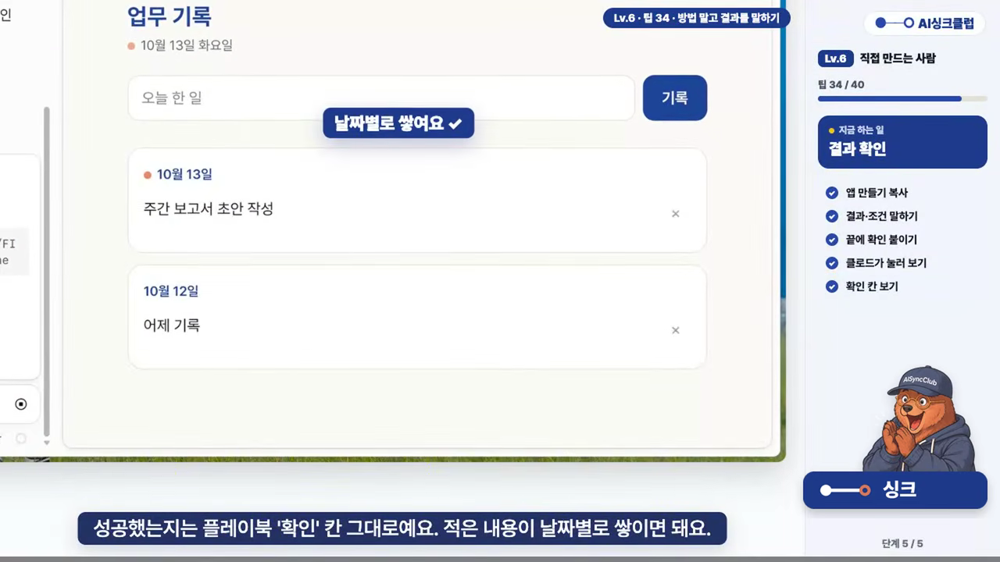
올리기 전 점검도 에이전트에게 나눠 맡겨요. "에이전트 여러 명이 화면, 보안, 속도를 나눠 점검하고 한 번에 고쳐."
팁 35. 브라우저 3D는 코드 한 장
4단계의 블렌더 계단을 이번엔 three.js로 다시 만들어요. three.js는 인터넷 창 안에서 3D를 그려 주는 도구라 프로그램을 깔 필요가 없어요. "three.js로 1~7 번호가 붙은 계단을 만들어 줘. 1~2는 초록, 3~4는 노랑, 5~7은 주황. 끌면 돌아가게."
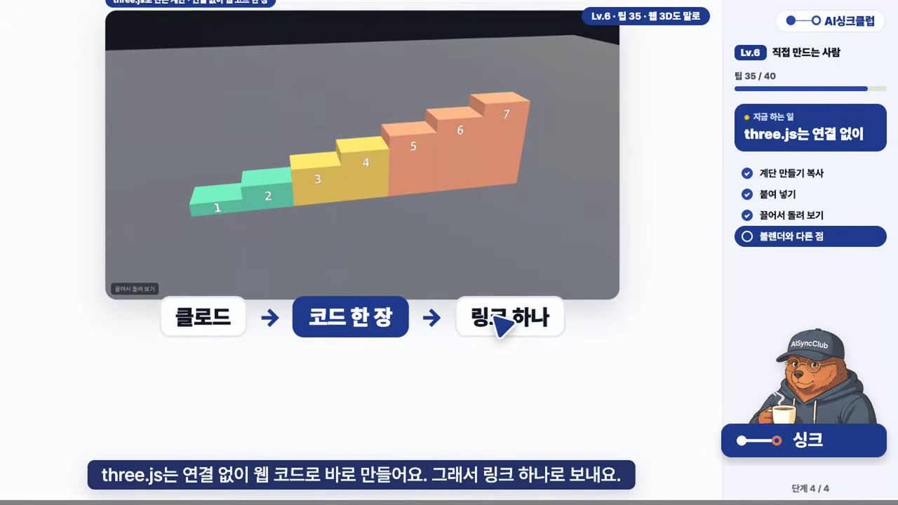
발표자의 정리는 이래요. 내 컴퓨터 프로그램은 MCP로 조종하고, 브라우저 3D는 코드 한 장으로 만들어요.
팁 36. 점검하고, Vercel에 올려요
Vercel은 앱을 인터넷에 올려 주는 서비스예요. 서버를 직접 구하고 설정할 필요 없이 클로드가 말 한 줄로 올려 줘요. 순서는 세 줄이에요.
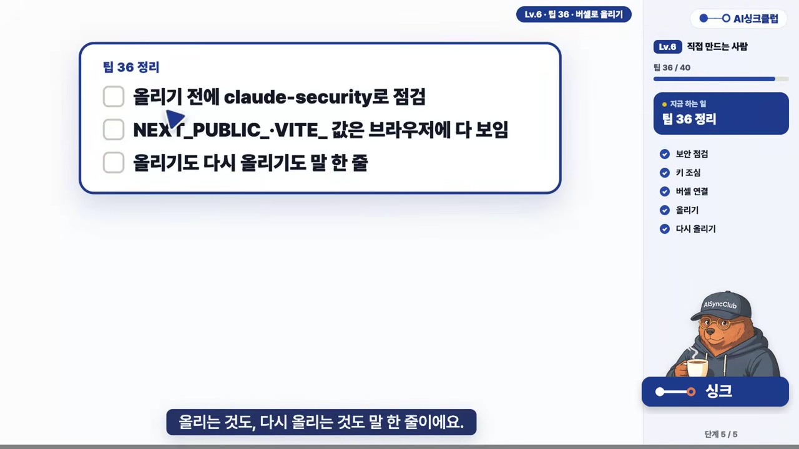
점검은 Anthropic 공식 claude-security 플러그인으로 해요. 그다음 커넥터 화면에서 Vercel을 켜고 "이 앱 버셀에 올려 줘"라고 하면 주소가 하나 나와요. 고친 뒤에는 "다시 올려 줘" 한 줄이에요. 회사 일로 쓸 앱이면 IT(Information Technology)팀과 먼저 얘기하래요. 요금은 꼭 확인해요.
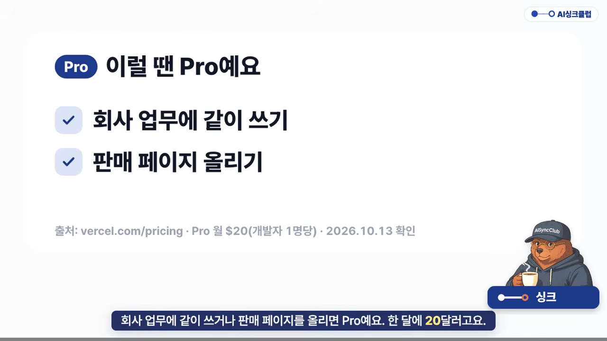
팁 37·38. 잘될 때마다 저장, 남의 것은 포크
한 번에 많이 고치다 망가지면 뭐가 문제인지 찾기도 어렵고 되돌릴 방법도 없어요. 그래서 잘될 때마다 커밋으로 저장해요. "여기까지 저장해 줘" 한 줄이면 클로드가 깃 명령을 쳐요. GitHub에 올리고 싶으면 연결해 달라고 하면 되는데, 토큰을 붙일 필요 없이 브라우저 로그인으로 이어져요. 망가지면 "어제 저장한 데로 돌려 줘"예요. 자주 쓰면 공식 commit-commands 플러그인으로 저장, 올리기, 합치기 요청까지 명령 하나로 해요.
대화를 갈라 보는 명령도 둘이에요. 발표자는 둘의 차이를 그림으로 보여 줘요.
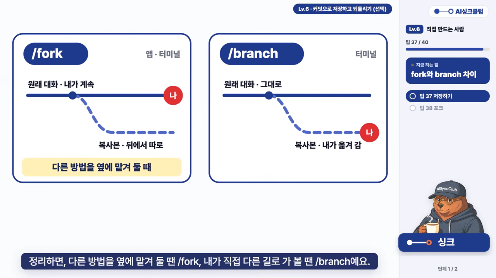
남이 공개한 오픈소스를 내 입맛대로 쓰고 싶으면 GitHub 저장소에서 Fork를 눌러 내 계정에 복사본을 만들어요. 거기서 고치고, 원본이 업데이트되면 Sync fork → Update branch를 눌러 따라가요. 내가 고친 곳과 원본이 고친 곳이 겹치면 충돌인데, "충돌 풀어 줘"라고 클로드에게 맡겨요. 쓰기 전에 라이선스는 꼭 확인하래요.
원격 조종과 클라우드 루틴
마지막 7단계는 내가 컴퓨터 앞에 없어도 일이 돌게 하는 단계예요. 휴대폰으로 시키고, 아침마다 결과를 받아요. 발표자는 Claude Code를 만든 보리스 체르니의 글로 시작해요.
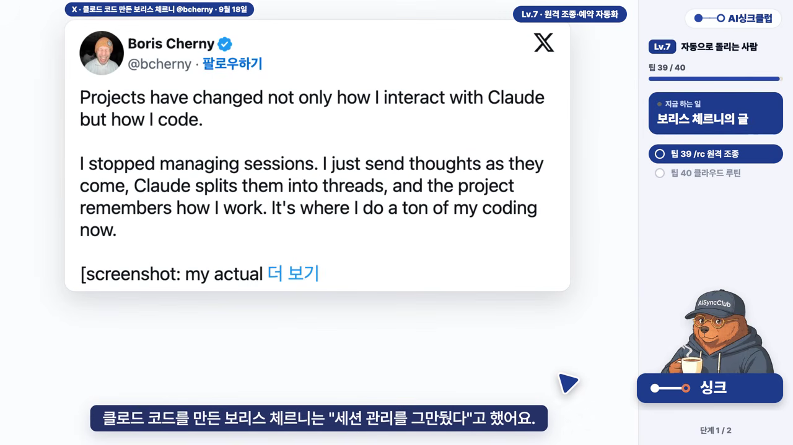
팁 39. 자리를 비워도 휴대폰으로, /rc
밖에 나왔는데 승인 하나 때문에 일이 멈춰 있던 적이 있죠. 입력창에 /rc를 치면 원격 조종이 켜져요. 휴대폰 Claude 앱에서 코드로 들어가면 이 대화가 보이고, 거기서 이어 시키고 승인도 눌러요.
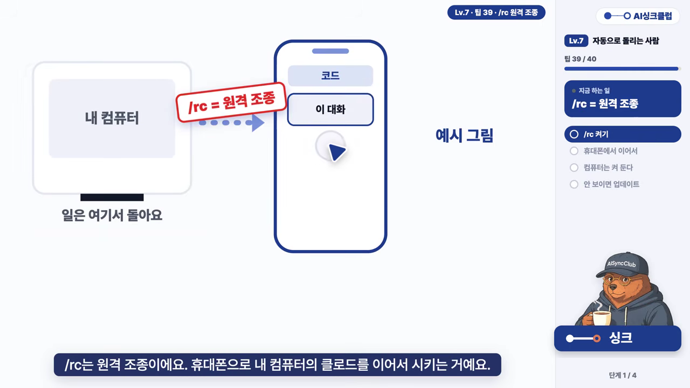
버튼이 안 보이면 앱부터 업데이트하고, Team 요금제는 관리자가 켜 줘야 해요.
팁 40. 매일 하는 일은 클라우드 루틴으로
매일 아침 소식을 찾아 정리하는 일을 손으로 하면 컴퓨터를 켜 두고 기억해서 해야 하고, 바쁜 날은 빠뜨려요. 루틴은 정해 둔 시간에 클로드가 알아서 일하는 예약이에요. 클라우드 루틴은 Anthropic 서버에서 돌아서 내 컴퓨터가 꺼져 있어도 돼요.
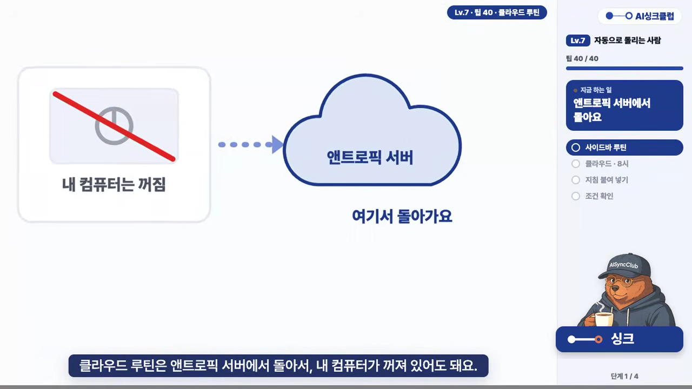
사이드바에서 '루틴'을 열고 새 루틴에서 '클라우드'를 골라요. 시간은 매일 아침 8시로 맞추고, 지침 칸에 할 일을 붙여 넣어요.
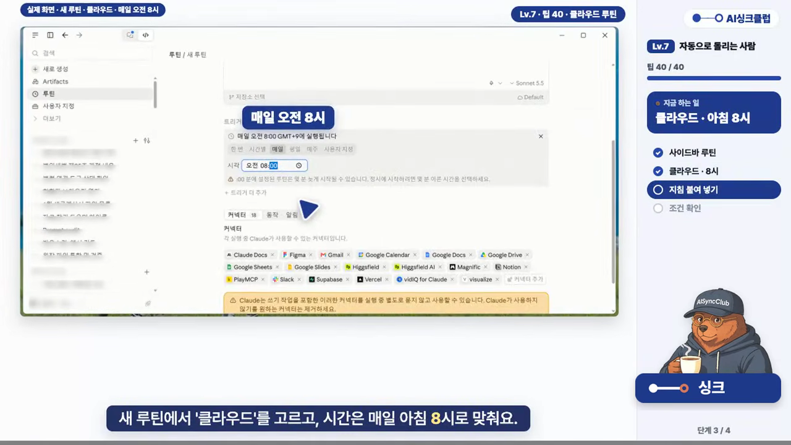
지침은 "매일 아침 8시, 어제 나온 AI 소식 다섯 개를 링크와 함께 정리해" 같은 한 줄이에요. 아침에 앱을 열면 결과가 와 있어요. 간격은 최소 1시간이고, 내 컴퓨터 파일을 쓰는 일은 컴퓨터를 켜 둬야 한다고 해요. 발표자 채널도 총괄 하나가 에이전트 여섯(소재 찾기, 기획과 대본, 제목과 썸네일, 경쟁 채널 분석, 장면 계획, 회고)을 지휘하는 식으로 일을 나눈다고 해요.
깔 것 24개 한 장
영상에 나온 깔 것을 발표자가 한 장에 모았어요. 플러그인은 기능 묶음, 스킬은 꺼내 쓰는 매뉴얼, 연결은 다른 앱과 잇는 거예요.
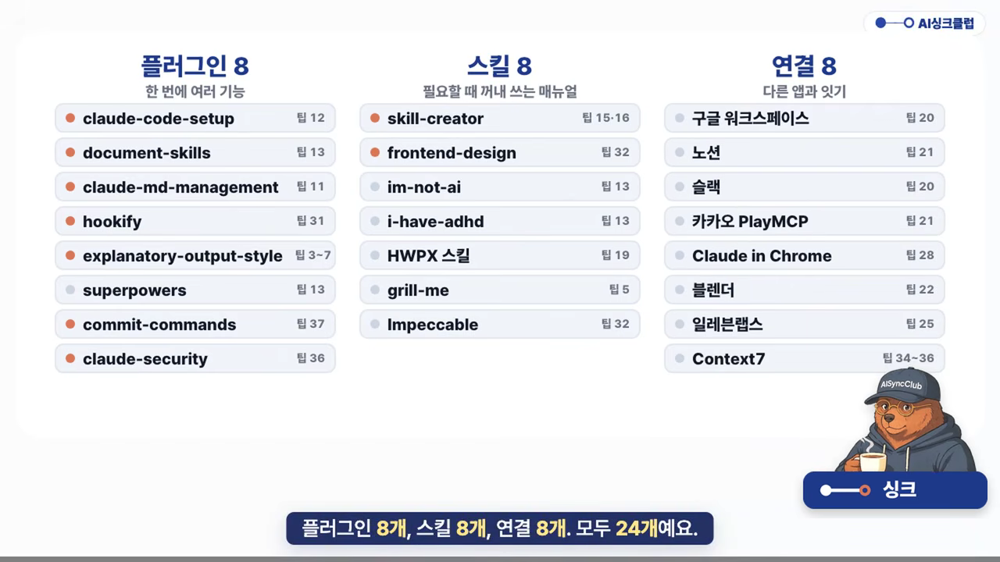
표에는 본문에서 따로 다루지 않은 이름도 몇 개 있어요(explanatory-output-style, superpowers, i-have-adhd, Context7). 영상은 이름만 올려 두고 설명하지 않아요.
발표자의 마지막 권유는 40개를 다 하지 말고 오늘은 팁 2 하나만 해 보라는 거예요. 연습 폴더를 열고 일을 통째로 맡기는 것부터요.